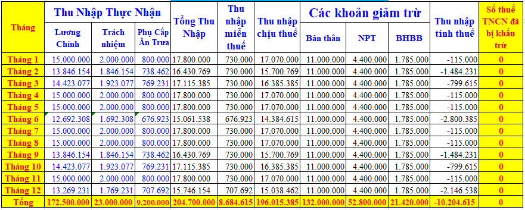
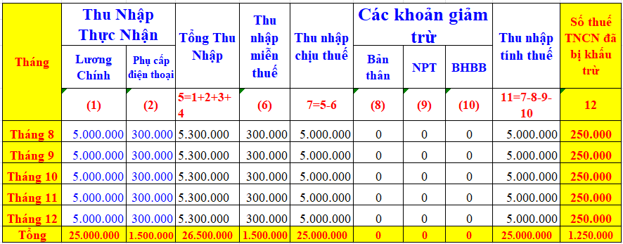
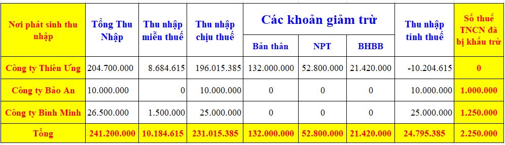

Thuế thu nhập cá nhân là loại thuế có kỳ tính thuế theo năm => Đến cuối năm doanh nghiệp sẽ phải quyết toán cho phần thu nhập mà doanh nghiệp đã chi trả trong năm, còn cá nhân (NLĐ có thu nhập) sẽ thực hiện quyết toán cho phần thu nhập đã nhận được trong năm tính thuế
Công thức tính thuế TNCN khi làm quyết toán như sau:
1. Trường hợp 1: áp dụng Thuế suất biểu lũy tiến từng phần theo năm:
Thuế TNCN phải nộp của cả năm = Thu nhập tính thuế của cả năm X Thuế suất theo biểu lũy tiến từng phần theo năm
Trong đó:
Thu nhập tính thuế của cả năm = Thu nhập chịu thuế của cả năm - Tổng các khoản giảm trừ của cả năm
Thu nhập chịu thuế của cả năm = Tổng thu nhập của cả năm - Tổng các khoản thu nhập được miễn thuế của của năm
Thuế suất theo biểu lũy tiến từng phần theo năm được thực hiện theo bảng thuế suất điều 14 của Nghị định số 65/2013/NĐ-CP hoặc theo khoản 2, điều 7 của Thông tư số 111/2013/TT-BTC như sau:
| Bậc thuế |
Phần thu nhập tính thuế/năm (triệu đồng) |
Phần thu nhập tính thuế/tháng (triệu đồng) |
Thuế suất (%) |
| 1 | Đến 60 | Đến 5 | 5 |
| 2 | Trên 60 đến 120 | Trên 5 đến 10 | 10 |
| 3 | Trên 120 đến 216 | Trên 10 đến 18 | 15 |
| 4 | Trên 216 đến 384 | Trên 18 đến 32 | 20 |
| 5 | Trên 384 đến 624 | Trên 32 đến 52 | 25 |
| 6 | Trên 624 đến 960 | Trên 52 đến 80 | 30 |
| 7 | Trên 960 | Trên 80 | 35 |
2. Trường hợp 2: áp dụng Thuế suất biểu lũy tiến từng phần theo tháng
Thuế TNCN phải nộp của cả năm = Thu nhập tính thuế của cả năm / 12 tháng * Biểu thuế lũy tiến tháng * 12 tháng
Trong đó:
Thu nhập tính thuế của cả năm = Thu nhập chịu thuế của cả năm - Tổng các khoản giảm trừ của cả năm
Thu nhập chịu thuế của cả năm = Tổng thu nhập của cả năm - Tổng các khoản thu nhập được miễn thuế của của năm
Thuế suất theo biểu lũy tiến từng phần theo năm được thực hiện theo bảng thuế suất tại Phụ lục: 01/PL-TNCN của Thông tư số 111/2013/TT-BTC như sau:
Hiện nay phần mềm HTTKK cũng đang áp dụng công thức theo tháng này để xác định số thuế TNCN phải nộp khi NLĐ làm tờ khai QTT TNCN theo Mẫu số: 02/QTT-TNCN theo Thông tư số 80/2021/TT-BTC:
Trong đó:
Thu nhập tính thuế của cả năm = Thu nhập chịu thuế của cả năm - Tổng các khoản giảm trừ của cả năm
Thu nhập chịu thuế của cả năm = Tổng thu nhập của cả năm - Tổng các khoản thu nhập được miễn thuế của của năm
Thuế suất theo biểu lũy tiến từng phần theo năm được thực hiện theo bảng thuế suất tại Phụ lục: 01/PL-TNCN của Thông tư số 111/2013/TT-BTC như sau:
| Bậc | Thu nhập tính thuế /tháng | Thuế suất | Tính số thuế phải nộp | |
| Cách 1 | Cách 2 | |||
| 1 | Đến 5 triệu đồng (trđ) | 5% | 0 trđ + 5% TNTT | 5% TNTT |
| 2 | Trên 5 trđ đến 10 trđ | 10% | 0,25 trđ + 10% TNTT trên 5 trđ | 10% TNTT - 0,25 trđ |
| 3 | Trên 10 trđ đến 18 trđ | 15% | 0,75 trđ + 15% TNTT trên 10 trđ | 15% TNTT - 0,75 trđ |
| 4 | Trên 18 trđ đến 32 trđ | 20% | 1,95 trđ + 20% TNTT trên 18 trđ | 20% TNTT - 1,65 trđ |
| 5 | Trên 32 trđ đến 52 trđ | 25% | 4,75 trđ + 25% TNTT trên 32 trđ | 25% TNTT - 3,25 trđ |
| 6 | Trên 52 trđ đến 80 trđ | 30% | 9,75 trđ + 30% TNTT trên 52 trđ | 30 % TNTT - 5,85 trđ |
| 7 | Trên 80 trđ | 35% | 18,15 trđ + 35% TNTT trên 80 trđ | 35% TNTT - 9,85 trđ |
Hiện nay phần mềm HTTKK cũng đang áp dụng công thức theo tháng này để xác định số thuế TNCN phải nộp khi NLĐ làm tờ khai QTT TNCN theo Mẫu số: 02/QTT-TNCN theo Thông tư số 80/2021/TT-BTC:
Chỉ tiêu [32]: UD hỗ trợ tính theo công thức: [32] = [31]/ (Đến tháng – Từ tháng + 1) * Biểu thuế lũy tiến tháng * (Đến tháng – Từ tháng + 1)
Trong đó:
+ Chỉ tiêu [32] là Tổng số thuế thu nhập cá nhân (TNCN) phát sinh trong kỳ
+ Chỉ tiêu [31] là Tổng thu nhập tính thuế
+ Từ tháng: là từ quyết toán (tháng 01)
+ Đến tháng: là đến tháng quyết toán (tháng 12)
+ Chỉ tiêu [31] là Tổng thu nhập tính thuế
+ Từ tháng: là từ quyết toán (tháng 01)
+ Đến tháng: là đến tháng quyết toán (tháng 12)
Tại chỉ tiêu số [24] Tổng số thuế phải nộp trên Mẫu số: 05-1/BK-QTT-TNCN theo Thông tư số 80/2021/TT-BTC (Bảng kê chi tiết cá nhân thuộc diện tính thuế theo biểu lũy tiến từng phần) thì phần mềm HTKK cũng tính theo biểu lũy tiến của số tháng quyết toán của DN
3. Bài tập ví dụ về tính quyết toán thuế Thu nhập cá nhân:
Trong năm 2025, anh Thành có thu nhập tại các nơi như sau:
Tại Công ty Diệu Tâm: Ký hợp đồng lao động vô thời hạn (tính thuế TNCN theo biểu lũy tiến)

Tại Công ty An Thịnh: Ký hợp đồng khoán việc vào tháng 6/2025 (tính thuế TNCN theo tỷ lệ 10%)
Tiền công: 10.000.000
Do không đủ điều kiện làm cam kết thu nhập (đang có thu nhập bị tính thuế TNCN theo biểu lũy tiền từ việc ký HĐLĐ từ 3 tháng trở lên tại công ty Diệu Tâm)
Nên bị khấu trừ thuế TNCN 10% là: 10.000.000 x 10% = 1.000.000đ
Do không đủ điều kiện làm cam kết thu nhập (đang có thu nhập bị tính thuế TNCN theo biểu lũy tiền từ việc ký HĐLĐ từ 3 tháng trở lên tại công ty Diệu Tâm)
Nên bị khấu trừ thuế TNCN 10% là: 10.000.000 x 10% = 1.000.000đ
Tại Công ty Bình Minh: Ký hợp đồng lao động có thời hạn 5 tháng (tính thuế TNCN theo biểu lũy tiến)
Đến cuối năm, anh Thành làm quyết toán thuế TNCN cho các khoản thu nhập mà mình đã nhận được trong năm 2025:
Bảng Tổng Hợp Thu Nhập của cả năm:
Nhìn vào bảng tổng hợp trên chúng ta xác định được: Thu nhập tính thuế của cả năm = 24.795.385đ
Sau đây chúng sẽ đi tính số thuế TNCN phải nộp của cả năm 2025 cho anh Thành bằng cả 2 cách:
Cách 1: Áp dụng Thuế suất biểu lũy tiến từng phần theo năm:
Thuế TNCN phải nộp của cả năm = Thu nhập tính thuế của cả năm X Thuế suất theo biểu lũy tiến từng phần theo năm
Với mức Thu nhập tính thuế của cả năm = 24.795.385đ => Đang thuộc vào bậc 1 trong bảng Thuế suất theo biểu lũy tiến từng phần theo năm

Đến cuối năm, anh Thành làm quyết toán thuế TNCN cho các khoản thu nhập mà mình đã nhận được trong năm 2025:
Bảng Tổng Hợp Thu Nhập của cả năm:

Nhìn vào bảng tổng hợp trên chúng ta xác định được: Thu nhập tính thuế của cả năm = 24.795.385đ
Sau đây chúng sẽ đi tính số thuế TNCN phải nộp của cả năm 2025 cho anh Thành bằng cả 2 cách:
Cách 1: Áp dụng Thuế suất biểu lũy tiến từng phần theo năm:
Thuế TNCN phải nộp của cả năm = Thu nhập tính thuế của cả năm X Thuế suất theo biểu lũy tiến từng phần theo năm
Với mức Thu nhập tính thuế của cả năm = 24.795.385đ => Đang thuộc vào bậc 1 trong bảng Thuế suất theo biểu lũy tiến từng phần theo năm
| Bậc thuế |
Phần thu nhập tính thuế/năm (triệu đồng) |
Thuế suất (%) |
| 1 | Đến 60 | 5 |
=> Thuế TNCN phải nộp của cả năm = Thu nhập tính thuế của cả năm X Thế suất 5% = 24.795.385 x 5% = 1.239.769đ
Cách 2: Áp dụng Thuế suất biểu lũy tiến từng phần theo tháng:
Bước 1: Xác định Thu nhập tính thuế bình quân tháng
Thu nhập tính thuế bình quân tháng trong năm = Tổng thu nhập tính thuế cả năm / 12 tháng = 24.795.385 / 12 = 2.066.282đ
Bước 2: Xác định số thuế TNCN phải nộp bình quân của 1 tháng (Theo biểu lũy tiến từng phần tại phụ lục 01/PL-TNCN (Ban hành kèm theo Thông tư số 111/2013/TT-BTC))
Với mức Thu nhập tính thuế bình quân tháng trong năm = 2.066.282đ => Đang thuộc vào bậc 1 trong bảng Thuế suất theo biểu lũy tiến từng phần theo tháng
Với mức Thu nhập tính thuế bình quân tháng trong năm = 2.066.282đ => Đang thuộc vào bậc 1 trong bảng Thuế suất theo biểu lũy tiến từng phần theo tháng
| Bậc | Thu nhập tính thuế /tháng | Thuế suất | Tính số thuế phải nộp | |
| Cách 1 | Cách 2 | |||
| 1 | Đến 5 triệu đồng (trđ) | 5% | 0 trđ + 5% TNTT | 5% TNTT |
=> Thuế TNCN phải nộp bình quân của 1 tháng = Thu nhập tính thuế bình quân tháng trong năm X Thuế suất theo biểu lũy tiến từng phần = 2.066.282 x 5% = 103.314đ
Bước 3: Xác định số thuế TNCN phải nộp của cả năm
Thuế TNCN phải nộp của cả năm = Thuế TNCN phải nộp bình quân của 1 tháng x 12 tháng = 103.314 x 12 = 1.239.769đ
Xác định kết quả sau khi làm quyết toán cho anh Thành:
+ Số thuế TNCN phải nộp của cả năm 2025 = 1.239.769đ
+ Số thuế TNCN đã bị khấu trừ trong năm 2025 = 2.250.000đ
Khi Số thuế TNCN phải nộp của cả năm < Số thuế TNCN đã bị khấu trừ trong năm thì chứng tỏ: năm 2025 anh Thành nộp thừa tiền thuế TNCN
=> Số thuế TNCN đã nộp thừa = 2.250.000 - 1.239.769 = 1.010.231đ